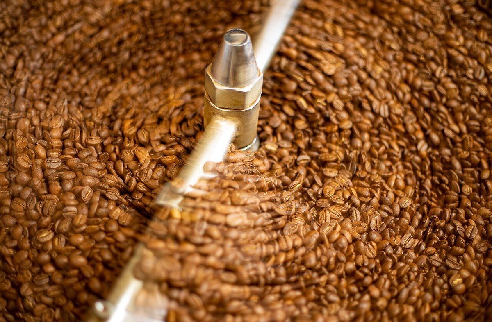

カフェ / 群馬県安中市板鼻
TWISTEDBREW
群馬県安中市板鼻にあるカフェ「TWISTED BREW(ツイステッド ブリュー)」のご案内ページです。営業時間やメニューなど、詳しいことは準備中。まずはInstagramをのぞいてみてください。

制作側の連想(お店の理念・由来とは無関係)
TWISTED から、ねじ山を思う
店名の由来は分かりません。制作側は「TWISTED(ねじれた)」という言葉から、ねじ(ボルト)の溝を連想しました。BREWは「(飲み物を)淹れる」という意味の英語ですが、お店の提供内容は分かりません。そこでこのサイトは、ねじの規格表のように、ページごとに呼び径(M3、M4…)とピッチ(溝の間隔)を割り振っています。お店の理念・由来とは無関係の、制作側の連想です。
ねじれ模様と豆
ひねりのある写真たち(イメージ)
写真はお店のものではなく、国外か撮影地不明のフリー素材です。


ご案内
お店のこと(確認できたものだけ)
| 所在地 | 〒379-0111 群馬県安中市板鼻605-11 |
|---|---|
| 電話 | 027-386-5200 |
| 営業時間 | 準備中 |
| 定休日 | 準備中 |
| ご予約 | 準備中 |
| 駐車場 | 準備中 |
| SNS | Instagram @twisted_brew |